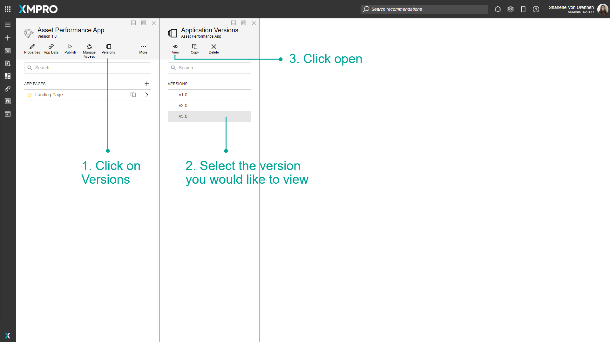
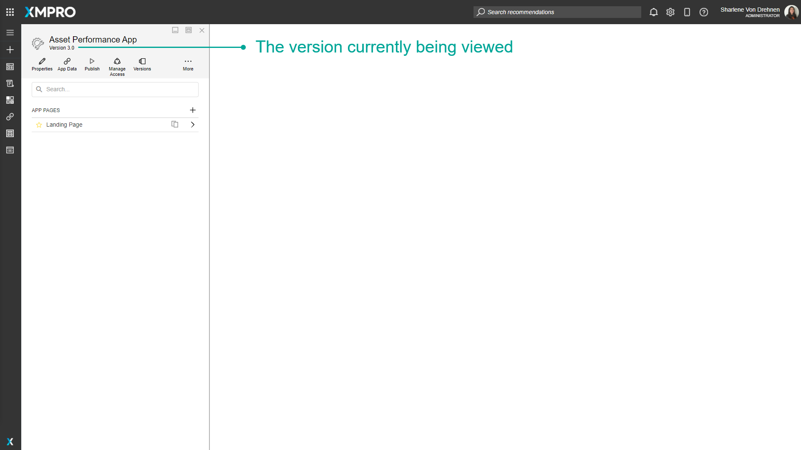
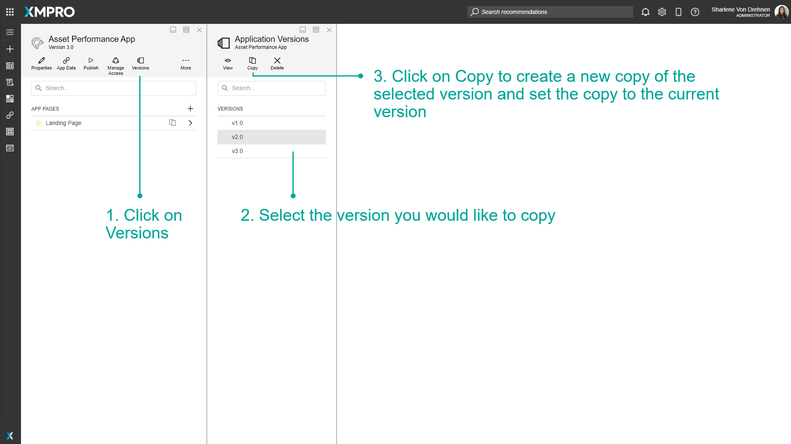
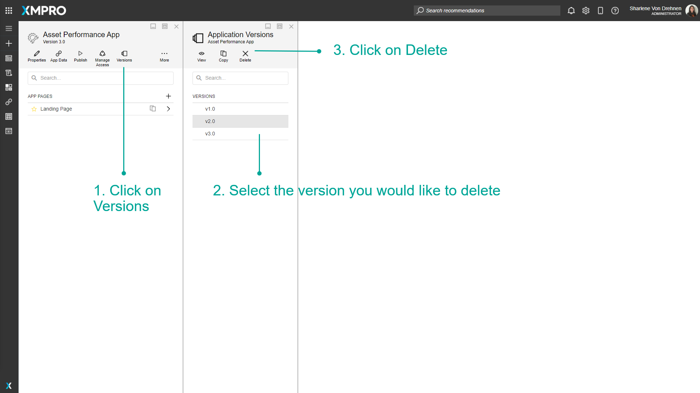

Manage Versions
Versions can be managed for different XMPro Objects, including Data Streams, Agents, Applications, and Recommendations. Copying a Version allows you to continue working and making changes to the XMPro Object while maintaining a Version of it before you made changes, which can also act as a backup mechanism.
Note
It is recommended that you read the article listed below to improve your understanding of Versions.
Opening a specific Version
Any of the major Versions of an XMPro Object can be viewed at any point in time. To open a specific Version, follow the steps below:
- Click on "Versions".
- Select the Version you would like to view.
- Click "Open".
The images below show how to view the Versions of an Application in the App Designer.

The Version you are currently editing is displayed as a subtitle below the name.

If you viewed a Version that is not the latest version available and the page is closed, it will not be saved. Thus, if re-opened, the latest version will be displayed, even if an older version is running.
You may run any of the Versions available, even if they are not the latest Version.
If you are making changes, always make sure you are working on the correct version.
Copying Versions
To copy a Version, select the Version and click on "Copy". The new copy will be created, set as the current version, and will have a version number higher than all the other versions. Thus, a major version increase will be done, e.g. if the version you copied is Version 2.35, but the latest version is Version 3.80, the newly copied version will be Version 4.0.
- Click on "Versions".
- Select the Version you would like to view.
- Click on Copy to create a new copy of the selected Version and set the copy to the current Version.

Deleting Versions
To delete a Version, select the version from the list and click "Delete".
To delete an XMPro Object completely, the XMPro Object must be deleted itself, rather than the Version.
- Click on "Versions".
- Select the Version you would like to view.
- Click on Delete.

Last modified: August 26, 2025